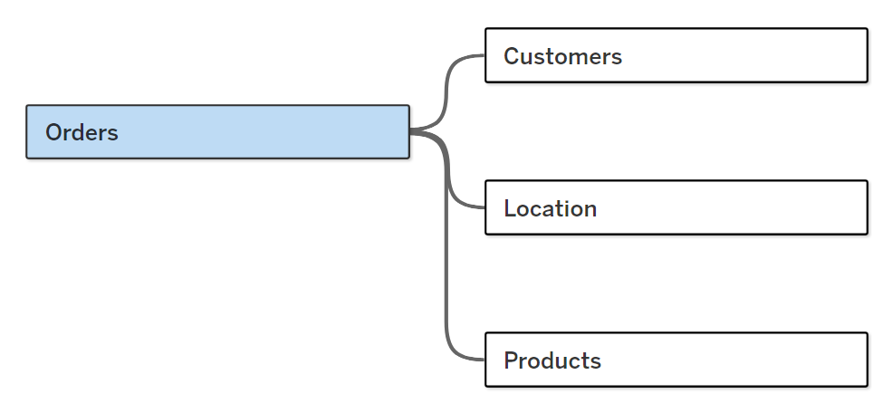
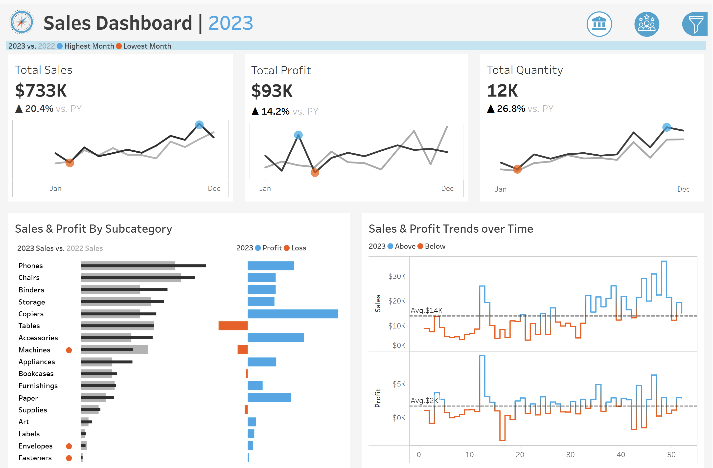
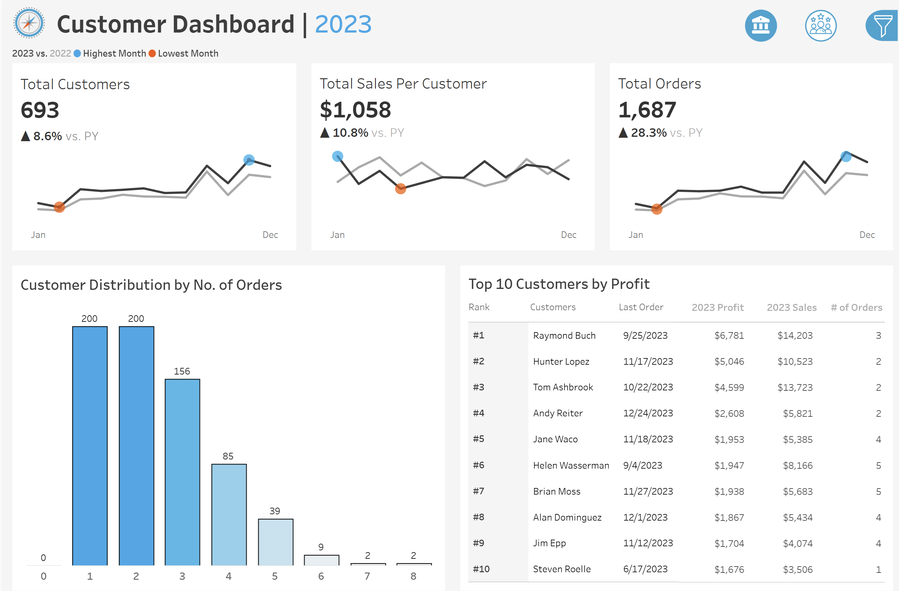

Sales & Customer Performance Dashboard
Topics: Tableau Interactive Dashboard, Ban with Sparkline, Bar in Bar Chart, Bar Chart, Tables.
📌 Project Overview
This project demonstrates the development of an end-to-end business intelligence dashboard using Tableau Desktop. The goal was to empower business stakeholders—particularly sales and marketing teams—with a dynamic tool to monitor sales trends, evaluate customer growth, and compare year-over-year performance.
The dashboard integrates core KPIs such as Total Sales, Profit, Quantity, Orders Counts, Customer Counts and Sales Per Customer, and includes time-based comparisons, region-level breakdowns, and customer segmentation views.
🛢️ Database
The underlying dataset simulates a retail sales environment, containing transactional-level records over multiple years. Fields include:
- Orders.csv: Contains detailed transactional data such as order date, sales amount, discount, and profit margin.
- Products.csv: Provides product metadata including product names, categories, and sub-categories.
- Customers.csv: Holds customer demographic and behavioral information, including customer ID, name, and segment.
- Location.csv: Holds customer geographic locations, including region, state and city.

🧠 Business Requirement
This user story outlines the specifications for building two dashboards using Tableau to help stakeholders, including sales managers and executives, to analyze sales performance and customers.
Sales Dashboard | Requirements
Dashboard Purpose
- The purpose of the sales dashboard is to present an overview of the sales metrics and trends in order to analyze year-over-year sales performance and understand sales trends.
KPI Overview
- Display a summary of total sales, profits, and quantity for the current year and the previous year.
Sales Trends
- Present the data for each KPI on a monthly basis for both the current year and the previous year.
- Identify months with the highest and lowest sales and make them easy to recognize.
Product Subcategory Comparison
- Compare sales performance by different product subcategories for the current year and the previous year.
- Include a comparison of sales with profit.
Weekly Trends for Sales & Profit
- Present weekly sales and profit data for the current year.
- Display the average weekly values.
- Highlight weeks that are above and below the average to draw attention to sales and profit performance.
Customer Dashboard | Requirements
Dashboard Purpose
- The customer dashboard aims to provide an overview of customer data, trends and behaviors. It will help marketing teams and management to understand customer segments and improve customer satisfaction.
KPI Overview
- Display a summary of total number of customers , total sales per customer and total number of orders for the current year and the previous year.
Customer Trends
- Present the data for each KPI on a monthly basis for both the current year and the previous year.
- Identify months with highest and lowest sales and make them easy to recognize.
Customer Distribution by Number of Orders
- Represent the distribution of customers based on the number of orders they have placed to provide insights into customer behavior, loyalty and engagement.
Top 10 Customers By Profit
- Present the top 10 customers who have generated the highest profits for the company.
- Show additional information like rank, number of orders, current sales, current profit and the last order date.
Design & Interactivity Requirements
Dashboard Dynamic
- The Dashboard should allow users to check historical data by offering them the flexibility to select any desired year.
- Provide users with the ability to navigate between the dashboards easily.
- Make the charts and graphs interactive, enabling users to filter data using the charts.
Data Filters
- Allow users to filter data by product information like category and subcategory and by location information like region, state and city.
📊 Dashboards
Sales Dashboard

Customer Dashboard
